Theorising modifying an ultra-legible font to include computational elements, reflecting the technological project themes. Studying how Pentagram conveys messages through typography to achieve a distinctive, technology-oriented aesthetic.
The next MakingA brief was a visual identity. Previously in the project I had made a logo-mark for my work and wanted to explore a typographical approach to the brief. I decided to make minor modifications to an ultra-legible font to give it a computational aesthetic, therefore communicating the themes of my project.
I began with some research into how other brands expressed their brand message subtly through typography. Pentagram has a section on their website that includes all their re-brands which I made good use of, researching what I thought was successful and implementable into my own project. I chose Pentagram as the focal point of my research as they are one of the most well known and well respected graphic design firms. To maintain such a reputation they must be fulfilling the requirements of 'good' design to a degree. By understanding the success of these rebrands I could begin to understand how meaning is conveyed through design in relation to brands related to technology.

I really like how Pentagram has minimally modified a typeface to fit their purpose. I am keen to use a highly legible typeface to fit with the design principles that I am exploring, however using an existing font in its original format is not very imaginative or visually interesting. To stand out it is important to be different and I think modifying a font to reference my technological themes seems like an appropriate solution.
One of the ways I intend to modify a typeface is to mimic the visual language of the terminal. For example taking elements from a CRT font.Instead of changing every letter to mimic these themes I would like to focus on a select few. One consideration however is how the weights of each letter behave. I have experience using Glyphs from an earlier unit however I did struggle with different weights and how the kerning values change. Being that my base font will likely be Helvetica and I am utilising the font-weight CSS property I will need to create a flexible system.

Another case study I have been looking into is Oxide: One of the elements that stood out to me is the incorporation of the diagonal line in the zero & using a zero instead of a capital O. This is very reminiscent of the terminal as is the rest of the brand identity for Oxide.
“Hexadecimal (also known as base-16 or simply hex) is a positional numeral system that represents numbers using a radix (base) of sixteen”
I then looked into existing fonts that I could use as a foundation/ take inspiration from:
I then continued my case study research, starting with:
The Cohere brand identity is a fantastic example of what I am looking to recreate. The brand itself is heavily technological and it modifies type based on an automated system.Not only is the process in which the type is changed topical but the aesthetic is also. This project was a large inspiration after listening to Jody’s talk at Pentagram. I admire how a system so technical is generating such aesthetic visuals. For my typeface I don’t plan to create a complex system that generates letterforms, however the subtle details created by this system can be achieved manually.

A further element that I hugely admire about this project is the versatility and tweak-able nature of the font: I love the idea that the font provides the tools and the user can tweak settings so that it can fit their purpose. This relates heavily to design principles as they are forced in this system: The rules of the system are forced upon the user so they cannot stray from the brand identity, the aesthetics of the typeface or even its legibility however the user still retains freedom.

Isomorphic Labs is a good example of how typography can be used as a secondary element to convey a message. Compared to Cohere, this example has much more subtle typography, allowing the background elements to convey much of the message. The message is reinforced by the subtle typographic properties of the logotype. The main example of this is how the “r” levels out so quickly, relating back to my previous comments documenting how more angular lines have a technological feel.
I am very interested in how the typography is used as a message reinforcer rather than the sole communicator of the message. I mentioned previously that the format of my process website is intentionally a background element to the content. I think my typography could help communicate the themes of my project without specifically saying it.

This Verizon brand identity is an interesting example. Unlike the previous two examples, this one uses a matrix grid with its typography. The motion in the video remains rigid to the grid which is an efficient way of communicating rigidity without physically altering the type.I like the idea of adding animations and motion generally to my process website to improve the viewing experience however this is not a priority.
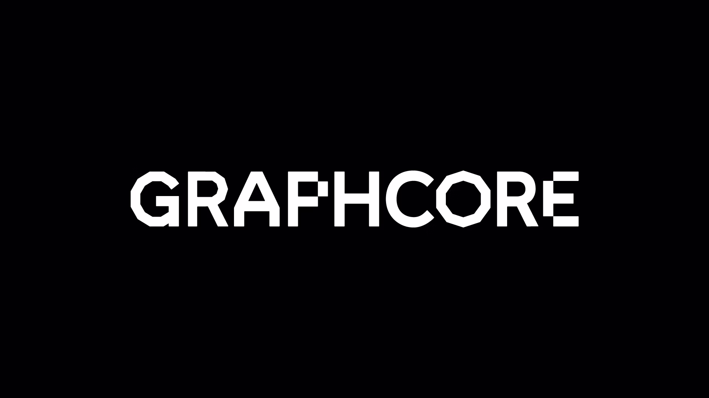
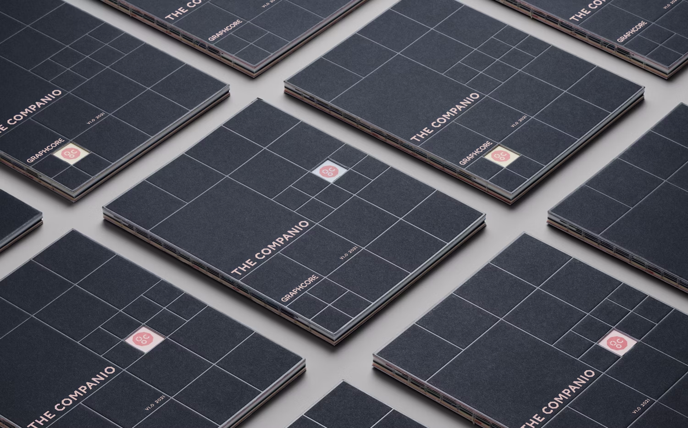
This example has been included less for directly typographical examples but instead for how the design uses type in accordance with a grid system. The grid system creates a sense of rigidity but at the same time a sense of modularity: creativity/ adaptability within parameters.

The Oxford Ionics rebrand links directly to matrix typography that I touched on earlier: This gives a very technological feel but does sacrifice legibility.
I wonder if creating a font that has a grid-like version and a legible version would be feasible.
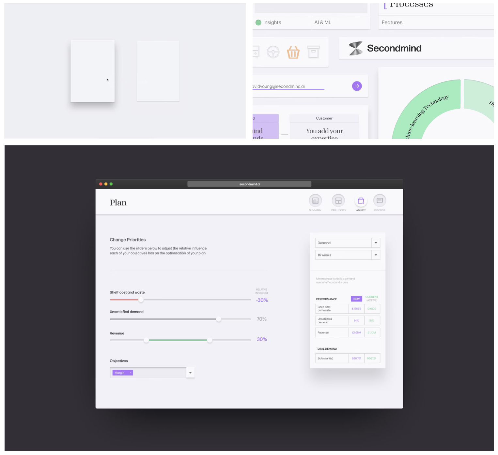
I don’t think the SecondMind identity is doing anything special, however it does use Helvetica, demonstrating that simple, to-the-point typography is a feasible solution.

Sonantic is an excellent example of how only one letter (or the occasional letter) being changed can dramatically alter the appearance of a typeface. It is not necessary to change every single letter to convey a new message: efficient, minimal tweaks can have a big impact
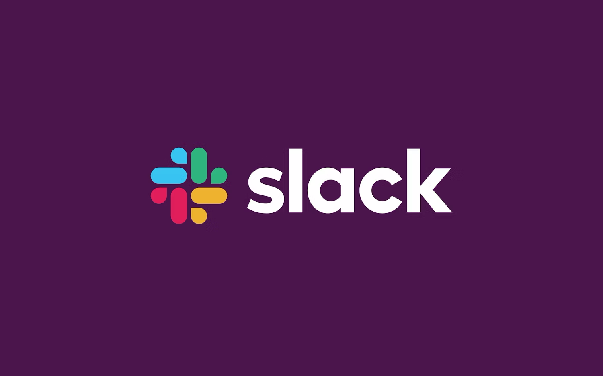
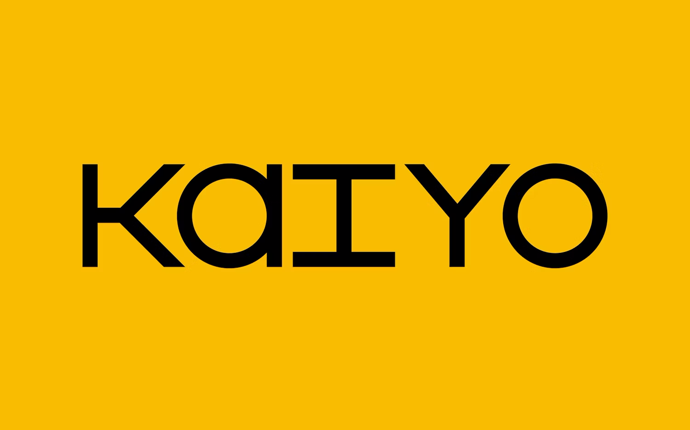
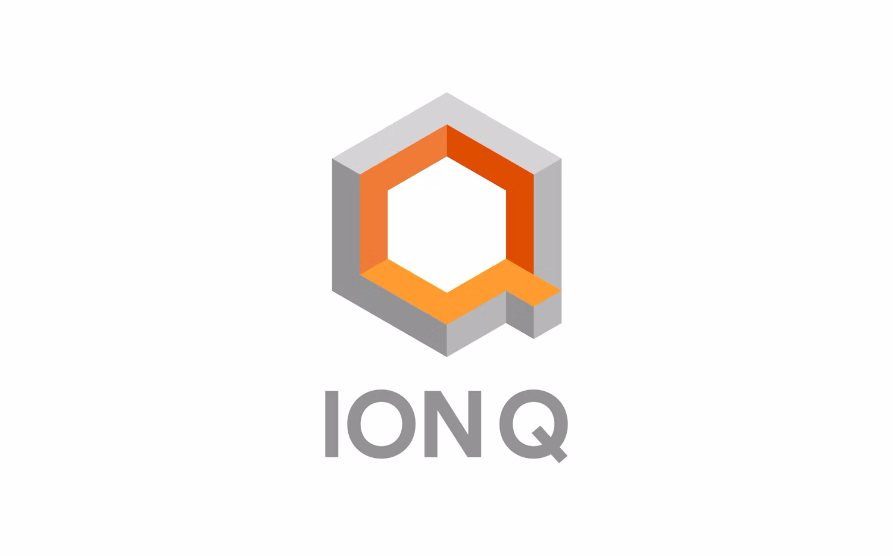
All of these examples are similar in the way they convey a technological feel through their typography. None of them are doing anything revolutionary in their design however their subtle technological undertones convey their context efficiently
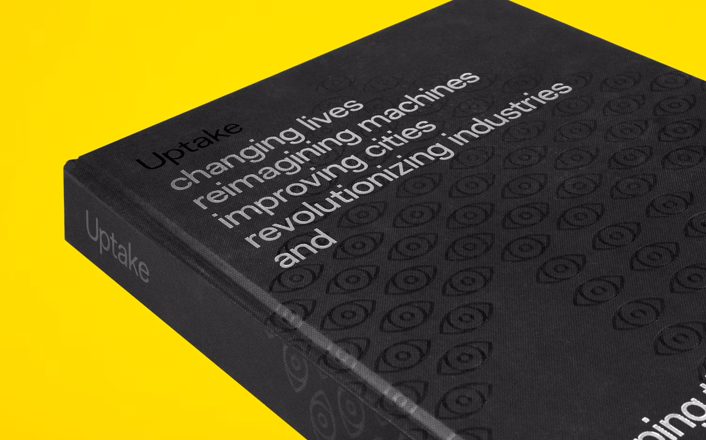
This example is very similar to my process book’s format: Hyper-legible sans serif typography and a very limited colour palette.
I like how the identity uses the eye icon to create other icons. This principle could be recycled in my project: I like the idea of creating custom glyphs. Previously I have noticed that Helvetica includes some icons, such as arrows and the Apple logo. Whilst this is not a necessity I believe it could be an easy way to implement project/ personal icons
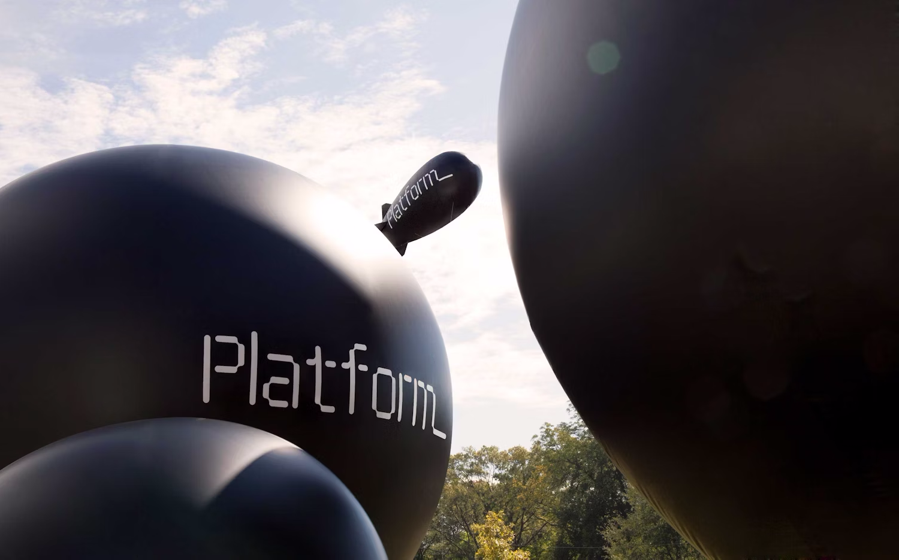
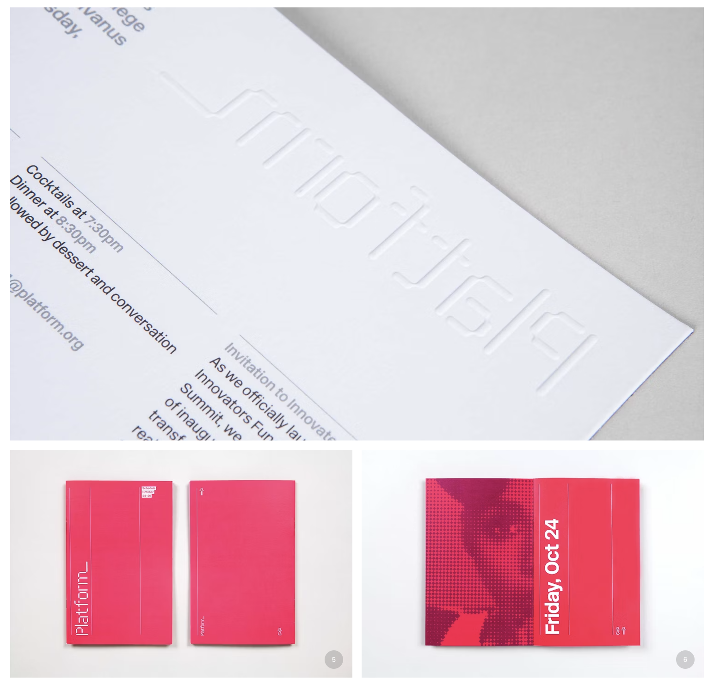
Platform’s identity has heavy literal links to technology and the approach I have taken to my project. The typography has direct links to technology and the terminal/ CRT typefaces that I have referenced and the book cover contains gridlines like my process book.
I would not like for my typography to be quite as direct as Platforms: I would prefer legibility to be prioritised more and for the context to be more subtly communicated.
One note I like about the book cover is how disconnected the grids are, it gives a more spacious feel and I realise how everything being confined on all sides can be constrictive. The cover also only includes vertical gridlines which is a technique worth exploring.
Representing my project themes caused speculation on the outcome. Focusing on typography that can be customised best suits the philosophy of good design being customisable: Fitting all user preferences.
To reiterate, the first thing that comes to mind when I think of a brand identity is their typeface. Logos are of interest however logos can be typographical. I believe that once a brand's typography has been finalised, everything else can follow: Icons can be inspired by typographical elements, the colour of the typeface is easily modified.
Being that my project is a combination of design principles and technology I thought it was important to use an incredibly legible typeface to convey my ideas. The bulk of my design identity philosophy has already been undertaken through crafting my process website.
Helvetica Neue was the typeface I decided to use and have used a variety of font weights, tracking values and line heights in the process website: One consistent, highly legible font with enough visual difference to demonstrate hierarchy.
Before the Making A Identity brief these design decisions were all but set in stone. To develop my identity into something unique I chose to modify characters in the typeface to subtly communicate the technological tropes of my project.
During the design process I realised flexibility was very important to me. Part of the reason I designed my process book as a website was to allow my content to be tweaked to the users preferences. I realised that some tweak-able typographical settings would benefit the user’s experience as I cannot predict what screen size they will be viewing the content on or the quality of their eyesight: Many factors that are out of my control could break the ‘success’ (legibility in this instance) of my design work.
Perhaps successful design is not one design that accommodates for all, but design that can be modified to the users preferences. It would be unfeasible to create a design that ticks every box however a design that can be tweaked to fit closable boxes is a different discussion.
I had this hypothesis before that user customisation may be the best middle ground and this task seems to support this vision.
In line with compatibility with my current setup (numbered font weights) and user tweak ability I thought it was appropriate to create a variable font with a tweak-able weight. This was something that I had not done before but decided Glyphs would be the best program for this.
Initiating the development of a variable font by analysing Helvetica Neue’s anatomy, focusing on creating compatible ultra-light and bold letter versions. Minimising details and utilising circular forms for a digital aesthetic, but encountered compatibility issues due to node mismatches. Facilitating the creation of a functional typeface whilst allowing further exploration into variable font dimensions and ink traps.
I began in Illustrator to identify the anatomy of Helvetica Neue. After some research I found the key to a variable font was creating two compatible versions of a letter, one at each of the extremes: ultralight and bold in my case.
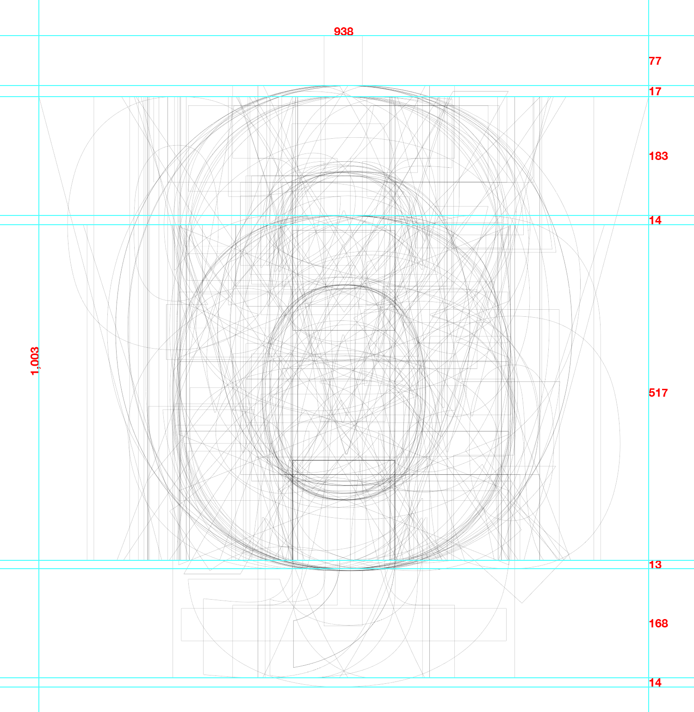
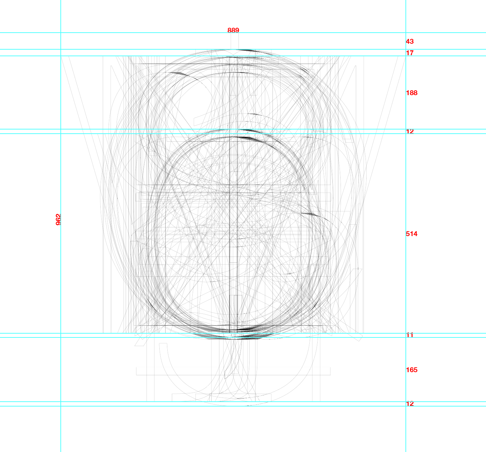
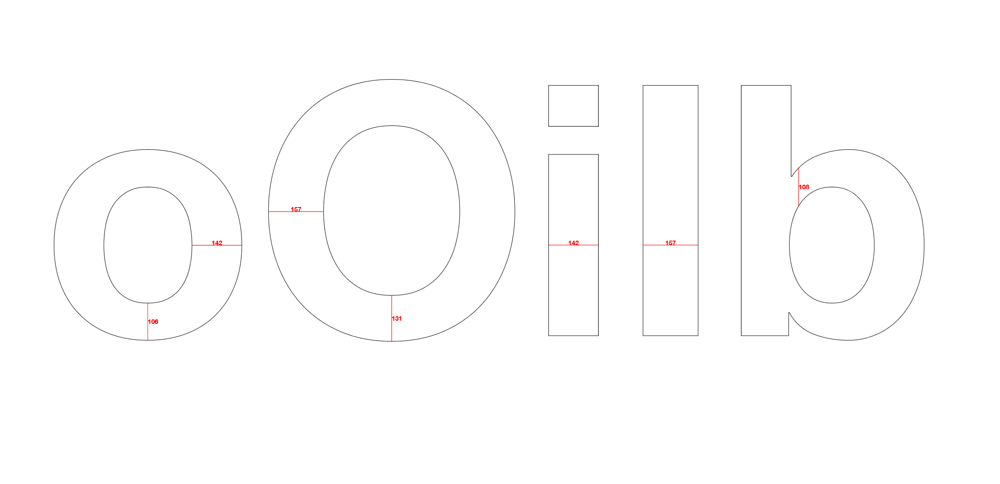
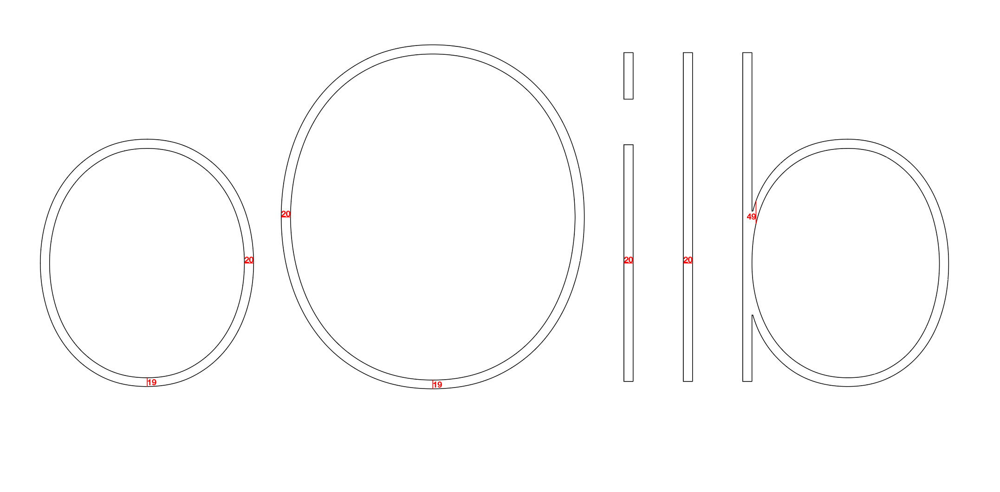
My design philosophy for the custom glyphs was to further minimise details in the lettering. I focused on using circles as a perfect circle is very digital to me. Perhaps this could be down to the fact that perfectly round circles do not occur naturally frequently. Generally I wanted to continue the hyper-legible and minimal nature of Helvetica whilst imprinting the mark of my project.
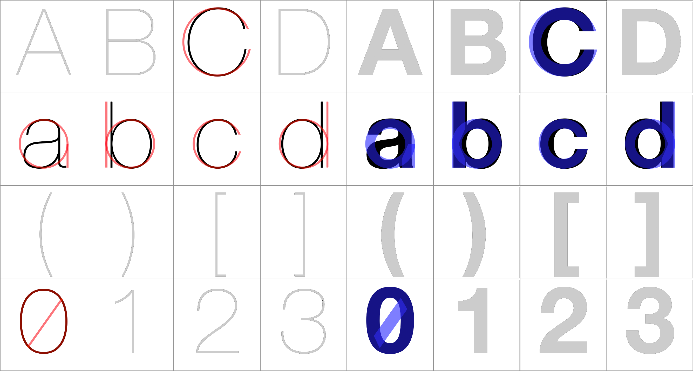
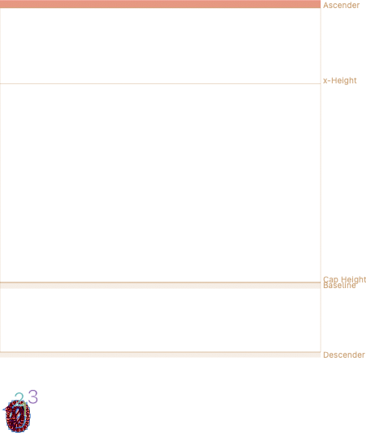
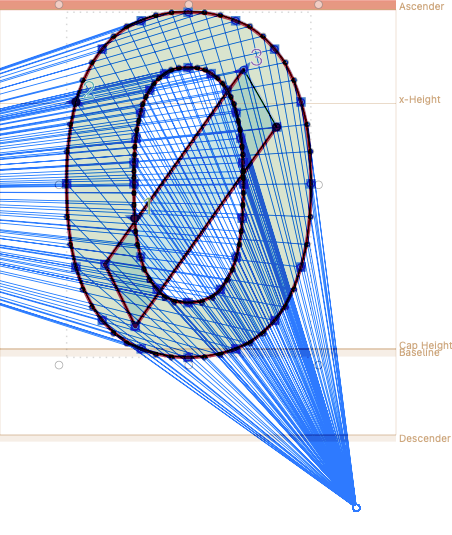
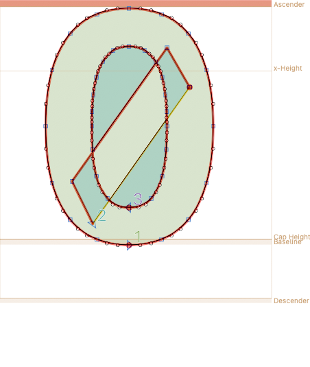
I thought it would be relatively easy to copy letters from Illustrator to Glyphs to achieve this setup, however I found that the letters were incompatible due to different numbers of nodes. I struggled a lot on how to re-link each node and eventually decided to re-create the letters from scratch, using as few nodes as possible.
I found that using round values would help with scaling issues and would also apply a makeshift grid. Although very fine this would assist in the alignment of my letterforms to the baseline and the various heights.
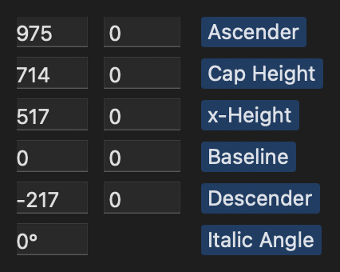
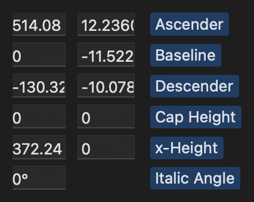
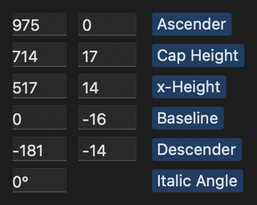
A further positive of using a base font as a reference is that I can almost completely bypass the kerning workload. I set up my document so that the values matched my Illustrator document (x10 to be precise). I then compared the cap height of the original Helvetica Neue and my version and converted the kerning values (divide by 1.8965919701).


Using this method I reached a functioning logotype for the letters in my title “OffGrid.” I exported and opened my work in Illustrator and tweaked the variabilities. I found this very satisfying and my appetite to continue adding variations and settings only grew.
Whilst learning about variable typefaces and compatibility I began thinking about further developments. Thoughts of creating variable font widths and ink traps came to mind. This is a path that I am hugely interested in exploring as I have enjoyed previous typography based projects however undertaking the creation of a typeface may be time inefficient.
Whilst creating a font family would be time consuming I believe it would be a valuable avenue to explore. My interest in design principles developed hugely during the typography project in Unit2, this was partly down to the many typographic-specific principles that came with creating a font. I believe that creating a font that uses specific principles and philosophies would be a fantastic proof of concept for my later project.Whilst there is no coding involved and the outcome would be element specific rather than compositionally specific, it would act as a good stress test for the rest of the project.Furthermore, the outcome could be used in my process book and dissertation to demonstrate that my work has a practical use whilst subtly conveying the message behind my work.
I concluded that creating a typeface would be beneficial to my project and started to re-think my progress. I realised that whilst the process had worked up until this point, it was not a sustainable method for creating a full letterset with even more variations.
My workflow until this point was to use Illustrator almost exclusively to draw the letters before taking them into Glyphs and making sure the versions were compatible. For the sake of efficiency I had decided to only change a few of the letters and I was using Helvetica Neue as a strong guide to ensure I did not have to commit too much time into kerning.
One of the main issues I had was scaling when transferring between Illustrator and Glyphs. For reasons unknown I needed to scale my letters up by a factor of 10 when transferring into Glyphs, then I had to correct the path directions of each object and tweak the scale further. This was followed by cleaning up the path direction of the letters and re-linking them so they were compatible with the other weights. Overall a very tedious process.
For these reasons I decided to start from scratch with a new Glyphs file and model the anatomical sizes on the Helvetica Neue Bold font when I opened it in Glyphs. I converted my entire workflow into Glyphs to prevent any scaling issues. This allowed me to work with whole values instead of decimals which I believe was part of the reason I failed to achieve consistent alignment. Whilst I far prefer modelling in Illustrator I can do the majority of my work inside Glyphs which saves me time jumping between the two programs.
During my struggle with making my letters compatible I accidentally stumbled across a tutorial on ink-traps and realised that I could re-use the same element across different characters. I theorised that this would be extremely helpful in ensuring my letters were mathematically and visually consistent. This also allowed me to realise that whilst there was no actual programming involved in the creation of my typeface, the rules and regulations (principles if you will) are near programmatic in function. Using recurring shapes would allow the entire typeface to update when a single change is made, automating the process slightly.
Experimenting with various letter variations to ensure font compatibility and functionality, including addressing initially overlooked serif italic versions. Major and minor adjustments to the typeface were explored to convey different messages, ensuring node compatibility across variations. Further development included utilising corner components like ink traps to optimize the design process by minimizing the need for excessive manual adjustments. This approach enabled a more efficient creation of variable typeface elements, focusing on the interplay of positive and negative spaces.

To ensure my ambitions were achievable I experimented with different variations of letters. For my first experimentation I realised how many variations were required to make all the fonts compatible. I forgot to add serif italic variations making some versions dysfunctional.
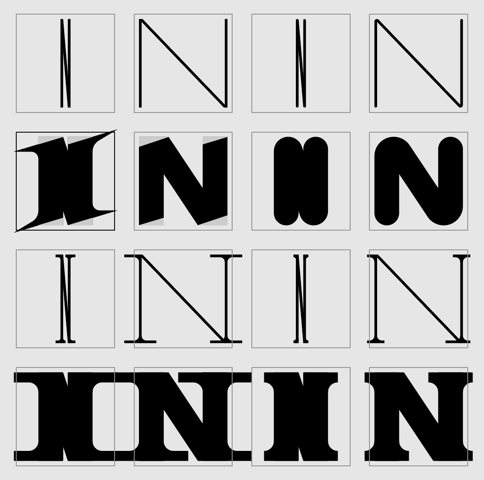
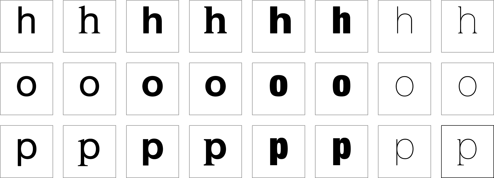
I explored how major and minor tweaks to one typeface can convey drastically different messages. All of the examples I created considered the nodes in each letter: All the 'N' and 'h,' 'o' and 'p' variations are compatible across their respective versions.

Taking my learnings back into Glyphs I confirmed the inner workings of compatible variations.

I considered the process of adding round and squared versions of the same letter as well as wide and narrow variations. To do this conventionally would require an unnecessary number of nodes and manual tweaking. Using a corner component to remove space, like an ink trap, would streamline my process.
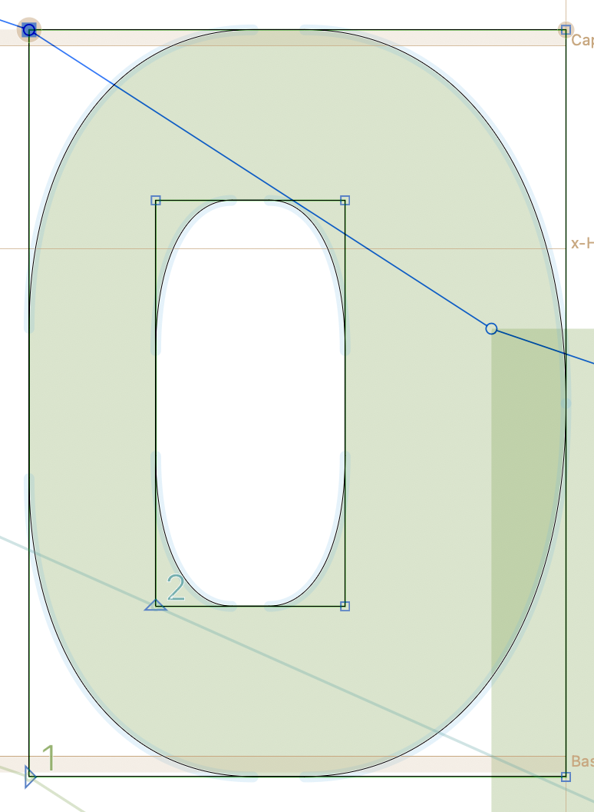
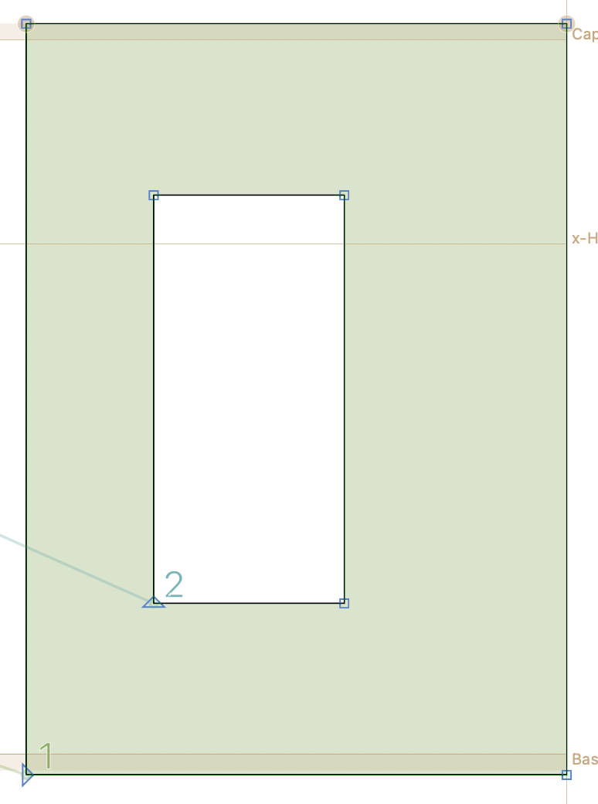
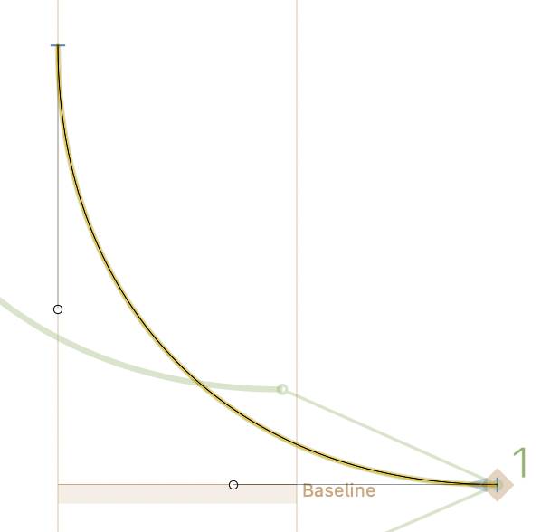
Above shows rounded corner components applied (above left) and sharp corner components applied (above right). Above centrally is the rounded corner component that removes space. This methodology resonates with how Swiss typographers see negative space. Mike Parker explains in Helvetica (2007) “It’s all about the interrelationship of the negative shape… the shapes between characters and within characters,” highlighting it's not necessarily what we see that creates legibility but rather what we don't see. “The counters and the space between characters just hold the letters. You can’t imagine anything moving, it is so firm... It’s not a letter that is bent into shape, it’s a letter that lives in a powerful matrix of surrounding space.” By using corner components like this I sculpt letters.

Instead of exclusively modifying existing elements (serifs, ink traps etc) I explored how additional elements (that use both positive and negative space) can be used to adapt associations stemming from typography.


Similar experiments with terminals and ink traps were used to better understand the methodology behind a multifaceted variable typeface.
Creating a lowercase-only font based on Helvetica Neue served as a proof of concept, demonstrating potential with some limitations. Issues included artifacts in letterforms due to grid constraints affecting node transitions. Using a strong grid facilitated speed but compromised flexibility in font variation transitions. To maintain compatibility, ‘collapsible’ corner components were used, leading to rendering artifacts. Challenges with multi-component letters arose, as traditional corner components didn’t fit with complex setups, prompting manual adjustments. The variable font aimed to accommodate subjective design preferences by enabling seamless style transitions.
I created a lowercase only font to continue testing the feasibility of my concept. The outcome is based heavily on Helvetica Neue and does not include all the variations I intend to implement; however it acts as a successful proof of concept.

Some unforeseen issues did arise, involving artifacts in the letterforms: The shapes did not export exactly how they appeared in Glyphs.
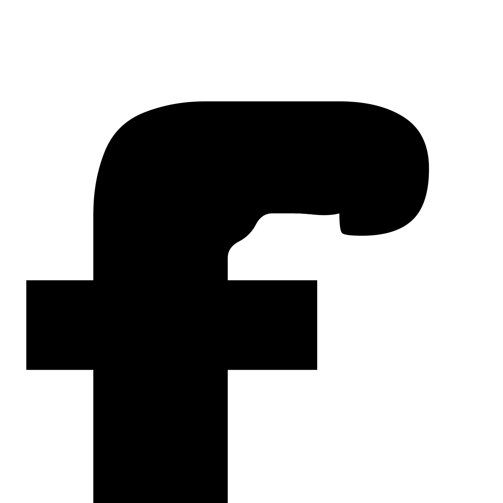
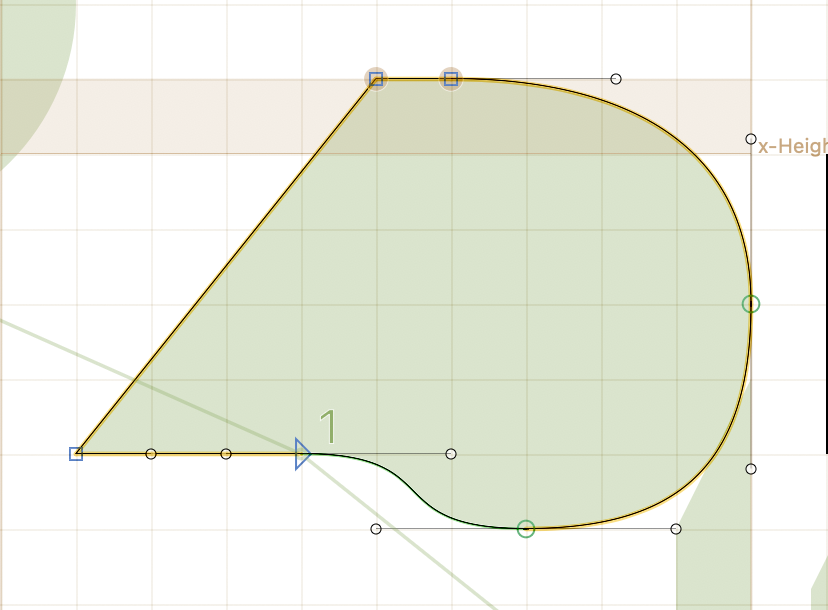
I used a strong grid to create my letterforms to improve the speed in which I could create letters. Having certain restrictions reduced the number of decisions I needed to make. This does interfere with how nodes work which is particularly apparent when transitioning between font variations
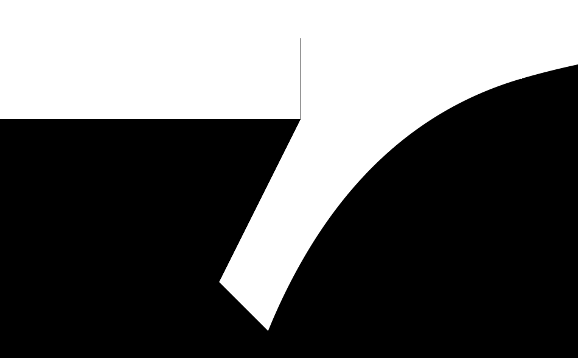
One problem with using 'collapsible' corner components is that they cannot be removed completely: To maintain compatibility the components must maintain the same number of nodes and handlebars in all variations, sometimes leading to the rendering of unnecessary artifacts as shown above.
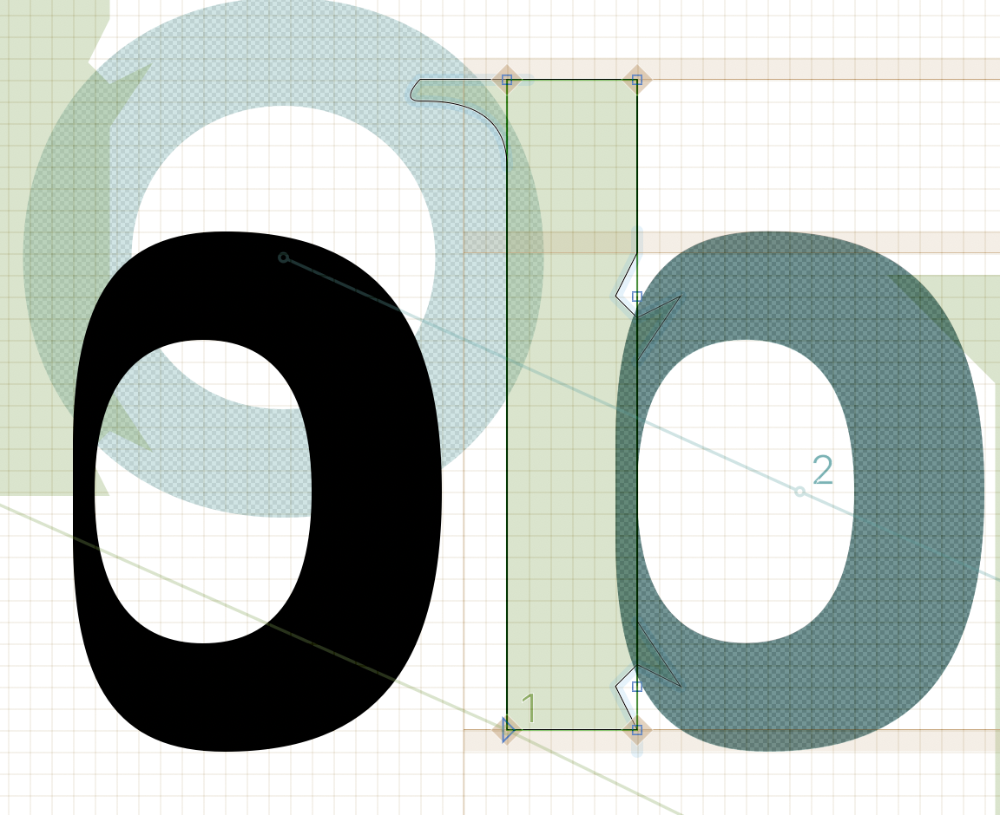
Another issue I encountered revolved around the setup of multi-component letters. Initially I theorised using components would be an effective way of creating many variations easily however the setup shown above does not allow corner components to be used in their traditional sense (as there is no 'corner' to interact with). My solution to this was to cut out parts of the letter manually however more complex corner components would not be compatible with this methodology.
Unlike my previous experimentations this was a full character set, meaning I could no longer avoid difficult letters that did not conform with the rigid rules I was applying to each font. I found that creating a cohesive, compatible, legible and aesthetic font was difficult when all letters are required. Previously my experimentation and research had pointed me in the direction of writing "h," "o" & "p" first as they would demonstrate the style of the typeface. This was effective however the methodology applied to any of these three letters does not translate to letters like "Z" or "y."
Furthermore, I could test my font with words. Seeing my design in a real, practical sense allowed me to envision the true potential for the font.
Philosophy behind the typeface
'Good' design is defined by many factors but any conclusion reached will assert that design is subjective, meaning there is no objective definition. To account for this I decided to create a variable font that transitioned seamlessly between styles.
I wanted to explore the theme of democratising design. Themes explored in my dissertation pushed me towards the idea of inclusive design and what it could look like. I concluded that one truly inclusive form of design would be one that is completely personal. One way in which this could be achieved is through the conventional designer-client relationship however presently this would be infeasible as there is not a 1:1 ratio of designers to non-designers.
To climb this hurdle I found the idea of democratising design tools and design language to be a stimulating topic. This partly was inspired by Jody Hudson-Powell's work for Pentagram, specifically his work on Cohere where generative (non AI) resources were provided to the client, allowing them to take charge, in part, of the design work.
The nature of variable typefaces is their ability to seamlessly transition between styles by using a slider: an accessible and intuitive system. By applying the same principles to a font family with more diverse variations I would allow the user to create new combinations with no design knowledge. Of course I would be applying my personal bias and design style to the fonts subconsciously however it would be a start. In the future, sampling other designers' work would be one way of making the fonts more inclusive.
Similarly, the designer would benefit from a 'one-size-fits-all' typeface, particularly if it was based on a conventionally successful font like Helvetica. Design purists would see no reason to stray far from the base version whereas more expressive designers would have the ability to push the boundaries of the typeface: The happy medium is subjective and so the typeface would account for all visual preferences and use cases.
This methodology stems in part from The Debate, a discussion between Wim Crouwel and Jan Van Toorn which highlights these ways of working. Crouwel sees Helvetica as the perfect typeface with no reason to stray from it at all. Van Toorn on the other hand believes there is no way to truly be neutral as a designer and so follows a more artistic approach. These designers are at opposing ends of the design philosophy spectrum. My typeface would account for all the designers in between the two points (and the two points themselves!).
My vision for the context of my typeface is similar to that of Helvetica's and how sans serif, hyper legible typography was applied to everything and anything post WWII. The nature of the typography is different however, meaning that whilst the same typeface may be the standard design solution, its versatility will prevent it from becoming overused in the same way.
Another interesting point to consider is association. Helvetica became associated with capitalism “corporate culture” (Pater, 2016) however if the visual style of a font is ever-changing it would likely never be associated with anything in particular. The goal of the typeface is to capitalise on associations, not build them. Being how diverse the font aims to be, it would never be truly contextualised as it would be adaptive to the context.
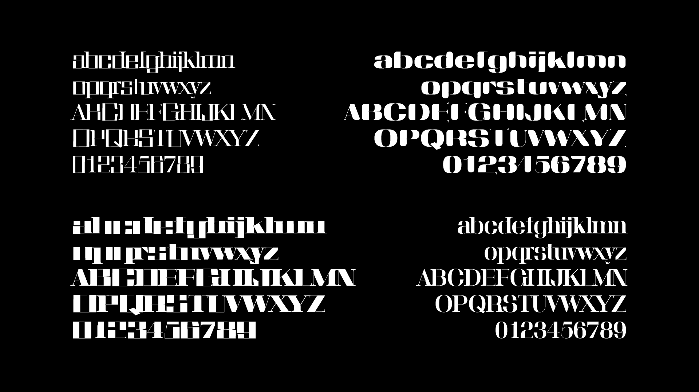


Unfortunately I am not happy with my final outcome: I simply ran out of time. The state that I have concluded the work in would act as a wonderful foundation to develop the typeface from, however I am not able to continue development. I realised that, although my idea is a good one, it requires a lot more expertise and/ or time to be done properly.
At the inception of my idea I thought I was really onto something and couldn't see why this concept had not been accommodated before. In retrospect however it seems the time and technical restrictions of creating a successful version of this project do make it infeasible by an individual.
I found that as soon as various fonts are added the number of variations increases exponentially which truly stifles creative freedom. I found the process very repetitive as far as creating the letterforms, I never progressed onto the really interesting ideas I aimed to explore. In the future I will not be so ambitious with creating a full character set that even includes punctuation. I feel that if I had begun work on one typeface instead of carrying out various experiments earlier in the project I would have created a less efficient system but focus over a matter of weeks is better than perfecting a strategy and leaving it too late.
As more variations are added, the number of fonts increases exponentially: one font with one variation is one total font, a typeface including three variations would need 3x3, nine variations. I was aspiring to include a variety of font styles, weights, widths, heights, serifs, ink traps and essentially any other property I could think of. Assuming I was to do three of each of these (in honesty I was thinking more) that would be 3x3x3x3x3x3, totalling 729 variations. Whilst there is significant overlap between these fonts in shapes, kerning etc that is an absurd amount of files to even navigate: not to mention all the exporting issues that comes with seamlessly transitioning between them.
By ensuring all the letters were compatible across the fonts I found creativity was severely limited. I had to be very conscious of how each node was used to avoid overcomplicating or oversimplifying: This meant that although the font styles were distinctive they were visually not completely dissimilar. I aimed to allow the user to work with the small differences as, in design, minor changes affect perception hugely. Serifs and san serifs are huge typographical differences but what about small serifs or wide serifs, would they better equip a designer to convey their message if subtlety is customisable? I believe so.
The entire font is completely future proof as the serifs and ink traps can be interchanged very easily. With that being said, Glyphs did through spanners in the works with compatibility problems: it is impossible to foresee exactly how two complex letters will transition from to another which often resulted in errors.
I do intend on continuing the exploration of this typeface, I feel the project has lots of unexplored potential and without time restraints I believe justice could be done to the project. I may not intend on creating 729 font variations but my outcome did not represent the themes or complexity I set out to.
Had I been able to incorporate all the styles I experimented with across the typeface into one font family I believe the project would have fit the intended goals of the project. There was lots of research and smaller experimentation not included in this presentation that informed my future goals also. Sadly all of my ambitions were not realised.
The final outcome felt quite rushed partly because I thoroughly enjoyed writing the dissertation and exploring themes. The typeface felt partly disconnected from the dissertation despite the intention for them to inform one another.
I have thoroughly enjoyed this project. All the themes explored are incredibly interesting to me and I have learned an incredible amount about design principles, typography, Artificial Intelligence, the design industry, society and the very real threat of human extinction. I found great difficulty transitioning between reading material for my dissertation and making graphical outcomes: I was educating myself on the reasonable possibility of AI superintelligence getting rid of humans (by turning them into paperclips or otherwise), on the other hand I was making a typeface for non-designers. As important as inclusive design and the visual communication industry is, it is not comparable to the threat of annihilation. Even within my dissertation it took great effort to stay focused on AIs impact on just design instead of fixating on AI experts saying there's a 10% chance we could be extinct in less than a century or the fact that the CEOs of the companies developing AI are building apocalypse shelters 'just in case.' Despite the contrast in themes and tones explored in the project they were all very topical points that I will continue to develop my understanding of in unit 10 and in my career generally.
As is the case with every project I wish I had more time to continue exploring these specific themes. I spent a large portion of my time theorising rather than creating. Now that I have this knowledge, the process that I would undertake would be far more efficient. I do not regret the learning process that led me to these conclusions. Retrospectively without the experimentation I would not have been capable of theorising let alone putting my concepts into practice, therefore the substantial consideration was not a waste as it would not have changed my outcome massively.
Revisiting Glyphs was an interesting experience, being that my last experience was in year 1. Some unit 2 feedback that has stuck with me throughout all my projects is not to gear a project towards your skillset but instead to use it as an opportunity to explore new topics and broaden abilities. I believe I followed this advice as my technical and theoretical knowledge of AI and design principles are incomparable to what it was a few months ago.
I am very happy with my choice to do a process website as it expanded the capabilities of documenting my design, process and influences. The nature of my project was far more dynamic and movement-based than I expected it to be initially, a website gave me the opportunity to display this work accurately and involve the reader which was vital for my final outcome.
My intention for unit 9 was to create a small non-ai version of my unit 10 project. I aim to create a design system that is highly customisable, incorporating AI, design principles and eye trackers. If I have struggled with time restraints and technical problems in this project I fear that my next idea may be overly ambitious. Regardless, with every project that I have failed to complete to my personal standards, I have found that my bank of knowledge expands into fields I have otherwise not explored. Doing this in the past has led me to learn 3D modelling software and programming, both of which are skills that I highly value and use regularly. I believe the best use of one's time presently is getting ahead of the AI curve, learning about its inner workings, potential, ethical considerations etc so that when it becomes more widely used my skills will be beneficial. I do believe without a doubt that AI will take a large portion of jobs, it's already happening in some industries, and when this happens, I would like to be qualified enough to capitalise on the new jobs that AI brings. AI will not only take jobs, it will provide them: It is essential to prepare for life with AI.